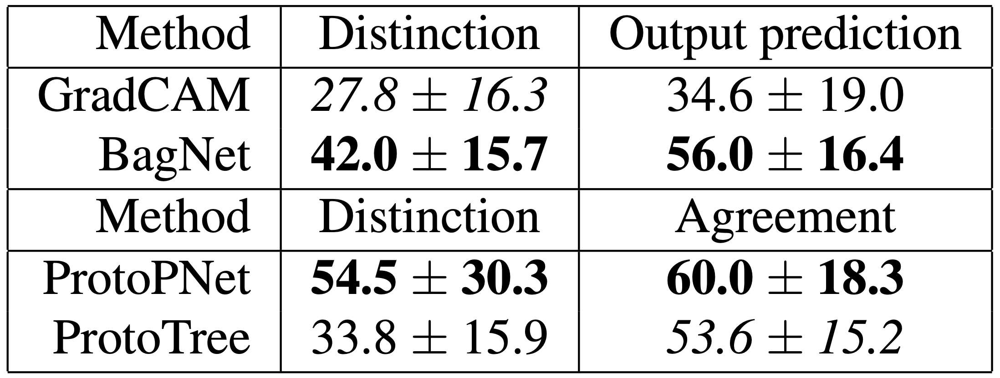

Our proposed agreement (top) and distinction (bottom) tasks for evaluating the human interpretability of visual explanations.
Paper
Code
Abstract
As machine learning is increasingly applied to high-impact, high-risk domains,
there have been a number of new methods aimed at making AI models more human interpretable.
Despite the recent growth of interpretability work, there is a lack of systematic evaluation
of proposed techniques. In this work, we propose a novel human evaluation framework HIVE
(Human Interpretability of Visual Explanations) for diverse interpretability methods in computer vision;
to the best of our knowledge, this is the first work of its kind. We argue that human studies
should be the gold standard in properly evaluating how interpretable a method is to human users.
While human studies are often avoided due to challenges associated with cost, study design,
and cross-method comparison, we describe how our framework mitigates these issues and conduct
IRB-approved studies of four methods that represent the diversity of interpretability works:
GradCAM, BagNet, ProtoPNet, and ProtoTree. Our results suggest that explanations
(regardless of if they are actually correct) engender human trust, yet are not distinct
enough for users to distinguish between correct and incorrect predictions. Lastly, we also
open-source our framework to enable future studies and to encourage more human-centered approaches to interpretability.
Citation
@article{kim2021hive,
author = {Sunnie S. Y. Kim and Nicole Meister and Vikram V. Ramaswamy and Ruth Fong and Olga Russakovsky},
title = {{HIVE}: Evaluating the Human Interpretability of Visual Explanations},
journal = {CoRR},
volume = {abs/2112.03184},
year = {2021}
}
HIVE (Human Interpretability of Visual Explanations)
We propose HIVE, a novel human evaluation framework for diverse interpretability methods in computer vision.
In our work, we first lay out two desiderata of explanations used to assist human decision making:
(1) Explanations should allow users to distinguish between correct and incorrect predictions.
(2) Explanations should be understandable to users.
We then design tasks to evaluate these two desiderata, namely the distinction task and the agreement task.
To demonstrate the extensibility and applicability of HIVE, we conduct IRB-approved human studies and evaluate
four existing computer vision interpretability methods that represent different streams of interpretability work
(e.g., post-hoc explanations, interpretable-by-design models, heatmaps, and prototype-based explanations):
GradCAM, BagNet, ProtoPNet, ProtoTree.
Above are snapshots of our user interface (UI) developed in HTML and Javascript.
We evaluate methods on two tasks: distinction (can you distinguish between correct and incorrect explanations?)
and agreement (do you agree with the explanation?).
We show the distinction task for GradCAM (left) and ProtoPNet (center) and the agreement task for ProtoPNet (right).
Results

Our results suggest that interpretability methods should be improved (to be closer to 100% accuracy)
before they can be reliably used to aid decision making.
For each study, we report the mean accuracy and standard deviation (random chance is 25% for distinction and output prediction and 50% for agreement).
Italics denotes methods that do not statistically significantly outperform random chance (p>0.001);
bold denotes the highest performing method.
Key findings
1. Participants struggle to distinguish between correct and incorrect explanations for all four methods.
This suggests that interpretability works need to improve and evaluate their ability to identify and explain model errors.
2. Participants tend to believe explanations are correct (regardless of if they are actually correct)
revealing an issue of confirmation bias in interpretability work.
Prior works have made similar observations for non-visual interpretability methods;
however, we substantiate them for visual explanations and demonstrate a need for falsifiable explanations in computer vision.
3. We quantify prior work's anecdotal observation that similarity of prototypes in prototype-based models are not consistent with human similarity judgements.
4. Participants prefer a model with an explanation over a baseline model.
Before switching their preference, they require a baseline model to have higher accuracy (and by a greater margin for higher-risk settings).
Please see the full paper for details.
Related Work
Below are some papers related to our work. We discuss them in more detail in the related work section of our paper.
This work is supported by the National Science Foundation Grant No. 1763642 to OR,
the Princeton SEAS Howard B. Wentz, Jr. Junior Faculty Award to OR,
and the Princeton SEAS and ECE Senior Thesis Funding to NM.
We thank the authors of [1, 2, 3, 4, 5] for open-sourcing their code and the authors of [2, 4, 5, 6] for sharing their trained models.
We also thank the AMT workers who participated in our studies, as well as the Princeton Visual AI Lab members
(Dora Zhao, Kaiyu Yang, Angelina Wang, and others) who tested our user interface and provided helpful feedback.